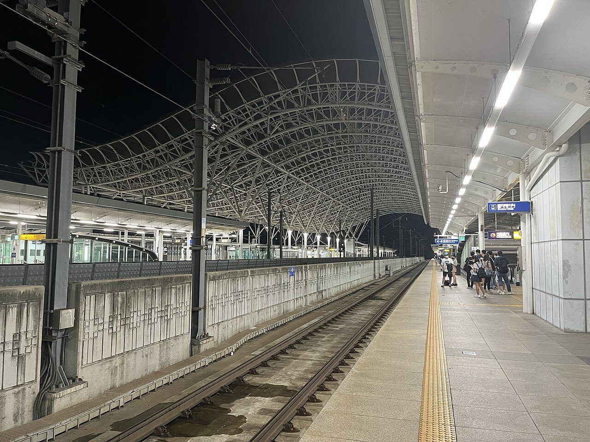
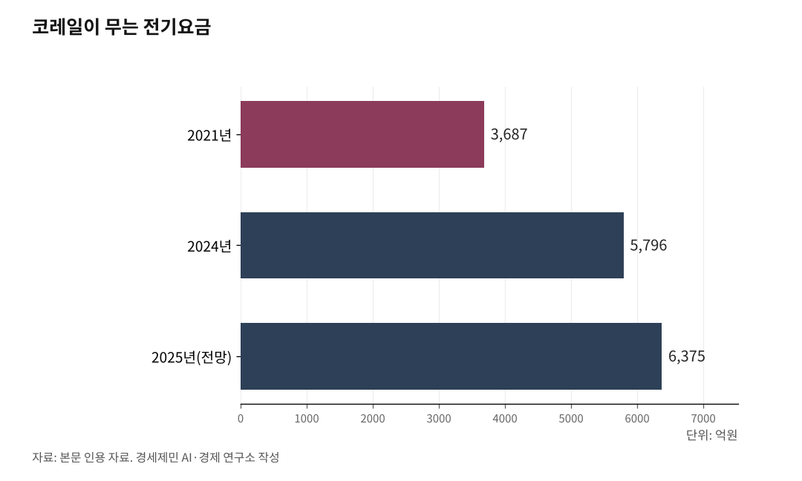

[127년 한국철도⑥] KTX는 벌고, 회사는 빚진다… 22조 부채의 진짜 뿌리
간선여객 1조원 흑자에도 코레일 전체는 적자, 누적 부채 22조원
철도는 자연독점 산업… 선로·신호 고정비를 한 사업자가 떠안는다
운임은 14년 묶였는데 전기료와 시설사용료는 뛰었다
선로는 공단이 짓고 빚은 운영사가 진다… 갈라진 인프라 비용
인하대 해양AI융합센터 김갑봉 연구교수(물류학)│코레일은 2024년 KTX와 일반열차를 더한 간선여객에서 1조원대 흑자를 냈다. 영업수익은 처음으로 3조원을 넘었다. 그런데도 회사 전체 장부는 적자다. 누적 부채는 2024년 말 21조원을 넘었고, 2025년에는 22조원대로 불어난다. 잘 버는 사업이 있는데도 회사가 빚더미인 데는 까닭이 있다.

5편이 14년째 묶인 요금을 다뤘다면, 6편은 그 요금이 떠받치지 못한 재정의 구조를 짚는다. 답의 뿌리에 자연독점이 있다.
1. KTX는 벌고, 회사는 빚진다
2024년 간선여객 영업수익은 3조737억원, 그중 KTX 운송수익만 2조3915억원으로 운송수익의 81.5%를 차지했다. 간선에서만 1조635억원을 남겼다. 그런데 광역전철과 물류까지 합친 회사 전체는 2024년 1114억원 영업손실을 냈다. 2023년 4743억원에서 줄었지만 적자는 여전하다. 누적 부채는 2023년 기준 20조4000억원, 부채비율은 2024년 265%, 하루 이자만 약 11억원이다.
숫자 하나가 이 모순을 압축한다. 코레일의 원가보상률은 2023년 82.8%에 그쳤다. 100원을 쓰고 83원만 거둔다는 뜻이다. 잘 버는 KTX가 있어도 회사 전체로는 원가조차 못 메운다. 돈 버는 KTX가 회사를 못 살리는 까닭은 철도라는 산업의 생김새에 있다.

2. 철도는 자연독점, 값을 묶으면 빚이 는다
철도는 자연독점(natural monopoly) 산업이다. 선로와 신호, 역에 드는 고정비가 워낙 커서, 한 사업자가 망 전체를 까는 편이 둘이 나눠 까는 것보다 싸다. 서울과 부산 사이에 선로를 두 벌 놓고 회사 둘을 경쟁시키는 것은 낭비다. 그래서 세계 어디서나 철도 인프라는 하나의 망으로 움직이고, 운임은 정부가 규제한다.
자연독점에는 한 가지 원칙이 따라붙는다. 값을 규제하면 그만큼 비용을 보전해 줘야 한다는 것이다. 한국은 철도사업법 제9조에 따라 운임을 신고제로 묶었다. 정부가 상한을 정해 고시하면, 운영사는 그 상한 안에서만 운임을 신고한다. 문제는 값을 묶는 한 손만 작동하고, 비용을 메우는 다른 손은 멈춰 있다는 데 있다.
운임은 2011년 12월 이후 14년째 그대로다. 그사이 비용은 거꾸로 뛰었다. 코레일이 무는 전기요금은 2021년 3687억원에서 2024년 5796억원으로 57% 급등했고, 2025년엔 6375억원에 이를 전망이다. 부채비율도 2020년 220%에서 2024년 265%로 올랐다. 값은 묶이고 비용은 오르니 그 차이가 빚으로 쌓였다. 22조원 부채는 운영의 방만이 아니라 제도 설계에서 나왔다.
3. 선로는 공단이 짓고, 빚은 운영사가 진다
자연독점의 비용은 또 다른 모습으로 코레일을 누른다. 시설사용료다. 코레일은 KTX 매출의 약 34%를 선로를 지은 국가철도공단에 시설사용료로 낸다. KTX 운행이 늘면서 2024년에는 전년보다 417억원(6.6%)을 더 냈다.
이 부담은 국제적으로도 무겁다. 전 세계 고속철도 가운데 선로사용료가 가장 비싼 프랑스 파리-리옹 구간이 매출의 25% 수준이고, 다른 선진국도 대개 20~30%에 머문다. KTX의 34%는 그 최고치마저 웃돈다. 망은 공단이 짓고, 운영사는 그 위를 달리며 사용료를 낸다. 짓는 쪽과 갚는 쪽이 갈린 구조다.
보전해야 할 쪽도 인색하다. 코레일은 적자를 무릅쓰고 벽지노선을 굴리지만, 정부의 공익서비스보상(PSO)은 손실의 절반에 그쳐 왔다. 2014년부터 2018년까지 공익노선에서 2조4206억원을 손해 봤는데 보전은 1조6684억원뿐이었다. 값은 묶고, 사용료는 비싸게 받고, 적자는 절반만 메우니 빚이 안 쌓이는 게 이상하다.
4. 빚으로 굴리면 안전이 밀린다
값을 못 올린 채 빚으로 굴리면 다음 청구서는 안전으로 온다. 2004년 들여온 KTX-1 46편성은 전체 고속차량의 절반이 넘는데, 운행 20년을 넘겨 2030년대 초면 수명이 다한다. 교체 비용만 약 5조원이다. 노후 차량 교체비와 오르는 전기요금까지 더하면 부채비율이 2028년 400%를 넘을 것으로 코레일은 본다.
빚이 불수록 이자가 늘고, 이자가 늘수록 차량과 시설에 쓸 돈이 준다. 자연독점 인프라는 한번 부실해지면 되돌리는 비용이 더 크다. 미루는 사이 위험은 이용자 쪽으로 옮겨 간다.
5. 고정비를 떠받칠 주체를 정할 때다
결국 핵심은 고정비를 누가 지느냐로 모인다. 길은 셋이다. 이용자가 요금으로 더 내거나, 국민이 세금으로 메우거나, 망과 운영을 다시 나눠 비용 구조를 바꾸는 것이다. 어느 쪽도 고르지 않은 채 값만 묶어 온 14년의 청구서가 22조원이다.
자연독점은 가격 규제와 비용 보전이 한 쌍으로 움직여야 한다. 한국은 가격만 묶고 보전은 거꾸로 갔다. 그래서 22조원은 방만의 결과가 아니라 미뤄 온 결정의 값이다. 이 물음은 곧 철도를 어떻게 짜느냐로 이어진다. 인프라와 운영을 나누는 상하분리냐, 한 몸으로 두는 통합이냐. 다음 편에서 해외 철도 구조개혁을 견줘 그 길을 찾는다.
※ 이 기사는 AI 프로그램 클로드를 활용해 작성했습니다.
참고문헌
· "'KTX서 2.4조 벌었는데...' 코레일, 호실적에도 적자 늪", 철도경제신문, 2025.2.11., https://www.redaily.co.kr/news/articleView.html?idxno=11355
· "[적자공기업]① 코레일, '선로사용료·PSO·요금동결' 삼중고", 뉴스포스트, 2022.8.23., https://www.newspost.kr/news/articleView.html?idxno=101232
· "(2025 국감) '코레일 부채 21조원 돌파…하루 이자만 11억원 심각'", 전기신문, 2025., https://www.electimes.com/news/articleView.html?idxno=361218
· "코레일 부채 22조원…'전기료 140% 오르는 동안 운임은 동결'", 농민신문, 2025.2.18., https://www.nongmin.com/article/20250218500274
· "코레일 부채 22조원 육박...전기료 오르는데 운임은 동결", 이코노미스트, 2025.2.18., https://economist.co.kr/article/view/ecn202502180050
· "철도사업법 제9조(여객 운임·요금의 신고 등)", 국가법령정보센터, https://www.law.go.kr/
사진 출처
· [대표사진] Cornflower123, "Gyeongju Station platform 4.jpg", 위키미디어 공용, CC0, https://commons.wikimedia.org/wiki/File:Gyeongju_Station_platform_4.jpg
※ 이 기사는 인공지능을 활용해 작성했습니다.
관련기사
- [127년 한국철도⑦] 영국은 쪼개 실패했고 일본은 합쳐 살았다… 한국의 길은 독일에 있다
- [127년 한국철도-번외] 외국인 606만명 이용, 국제공항을 고속철도로 잇자
- [127년 한국철도⑧] 철도화물 1%, OECD 꼴찌… 항만·산단에 선로를 대라
- [127년 한국철도④] 모두가 고속일 필요는 없다… 속도도 값도 등급으로 갈라야 산다
저작권자 © AI경세제민 무단전재 및 재배포, AI학습 및 활용 금지